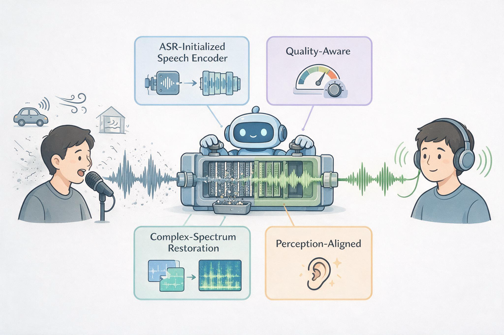
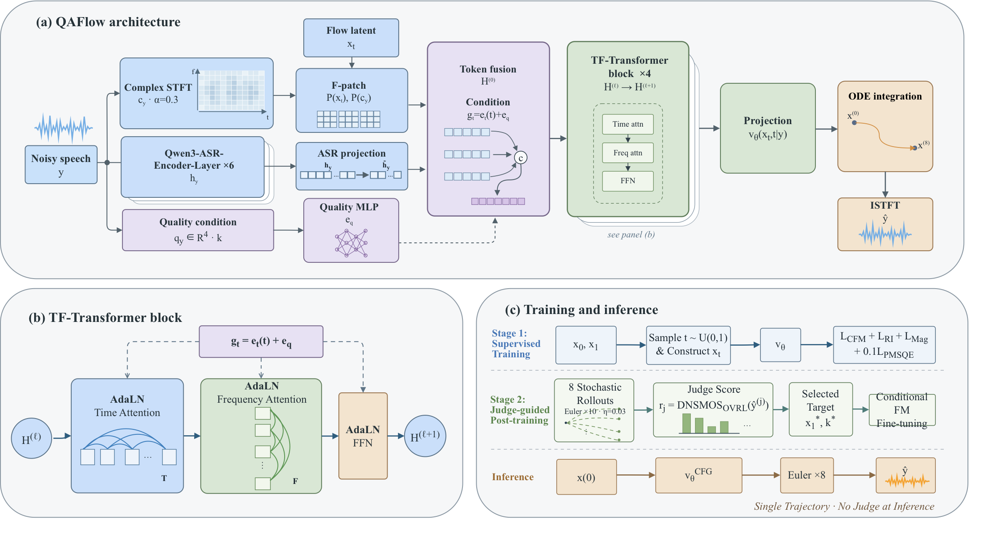

QAFlow: Quality-Aware Flow Matching for Speech Enhancement
Abstract
Conditional generative speech enhancement commonly treats the noisy observation as its principal condition, requiring the model to infer speech content and degradation severity from the same input. Task-relevant complementary conditions can reduce this ambiguity and provide a more stable basis for estimating the transport field. Constructing such conditions while retaining the content information required for restoration is therefore a central problem in flow-based enhancement. To address this problem, QAFlow is proposed as a quality-aware conditional flow-matching framework that conditions the velocity field on non-intrusive estimates of input quality. QAFlow combines a trainable speech-recognition acoustic encoder with flow matching in a power-compressed complex short-time Fourier transform domain, avoiding a separate latent autoencoder or neural waveform decoder. Supervised training uses spectral and perceptually weighted objectives, followed by an offline stage guided by a non-intrusive perceptual judge. Under single-trajectory, eight-step inference, QAFlow achieves the highest scores among the compared systems on all six evaluated non-intrusive quality metrics on VoiceBank and on five of the six metrics on DNS-no-reverb, with an H20 real-time factor of 0.017. It also obtains the highest mean opinion score in a blinded study of 20 utterances.

Method
For a noisy waveform, QAFlow forms a quality condition, an ASR-initialized acoustic representation, and a compressed complex spectrum. These signals condition a time-frequency Transformer velocity field that transports Gaussian noise toward a target spectrum. The quality embedding modulates every time-frequency block, the acoustic representation supplies speech-oriented context, and the complex spectrum retains the signal structure required for waveform synthesis. Supervised training learns the main enhancement behavior; a subsequent judge-guided stage distills perceptually preferred fixed targets into the same model. Deployment follows one short ODE trajectory.
